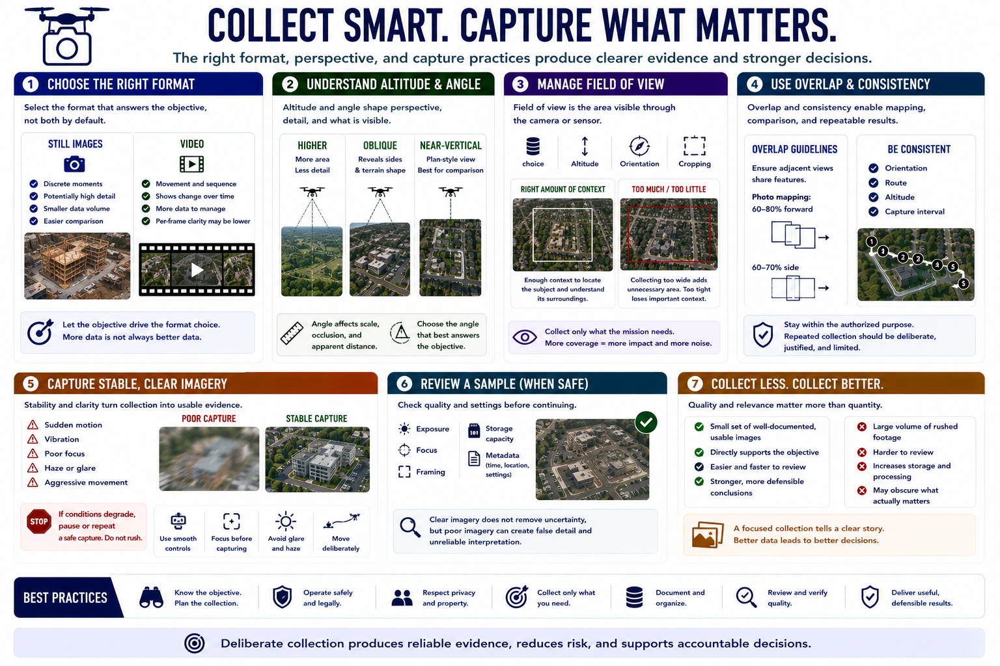

Visual Collection Basics
Connecting to LMS... Progress: in progress

Narration
Still images preserve discrete moments with potentially high detail. Video captures movement and sequence but creates more data and may reduce per-frame clarity. Choose the format that answers the objective rather than recording both by default.
Altitude and angle shape perspective. Higher views cover more area but usually show less detail. Oblique views reveal building sides and terrain shape, while near-vertical views support plan-style comparison. Angle also changes scale, occlusion, and apparent distance.
Field of view is the area visible through the camera or sensor. Lens choice, altitude, orientation, and cropping affect coverage. Record enough context to locate the subject without collecting a wide area that the mission does not need.
Overlap helps mapping and before-and-after comparison by ensuring adjacent views share features. Consistent orientation, route, altitude, and capture interval improve repeatability. However, repeated collection should remain within the authorized purpose.
Stable capture matters. Sudden motion, vibration, poor focus, haze, glare, and aggressive camera movement can make footage unusable. Pause or repeat a safe capture rather than rushing through a checklist while conditions deteriorate.
Review a sample for exposure, focus, framing, storage, and metadata when operationally safe. Clear imagery does not remove uncertainty, but poor imagery can create false detail and unreliable interpretation. Quality begins with deliberate collection.
Collection teams should prefer a small set of well-documented, usable images over a large volume of rushed footage. Excess data increases review effort and can obscure the evidence that actually answers the objective.